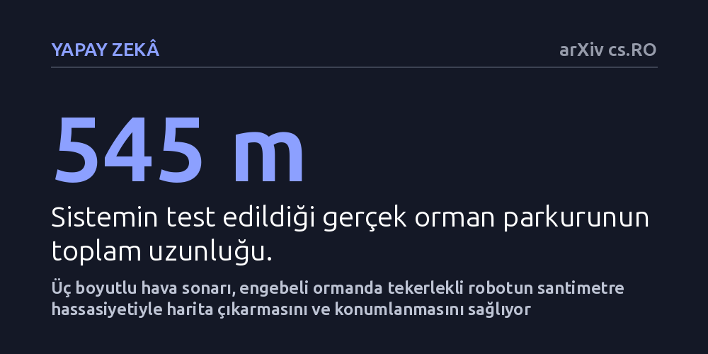

YAPAY-ZEKA · arXiv cs.RO · 2026-10-20
Araştırmacılar, yarasalardan esinlenen üç boyutlu hava sonarının engebeli orman zemininde tekerlekli robotların konum bulmasında ve harita çıkarmasında kullanılıp kullanılamayacağını inceledi. Geliştirilen sistem, 545 metrelik orman parkurunda yatay konum hatasını 0,28 metreye indirerek referans lidar haritasıyla yüzde 94,6 oranında örtüşen üç boyutlu harita üretti.
Sis, duman veya yaprak örtüsü nedeniyle kameraların ve lazerlerin körleştiği zorlu doğa koşullarında, robotların yalnızca ses dalgalarıyla da santimetre hassasiyetinde yön bulabileceğini gösteriyor.

Yarasalar, zifiri karanlıkta ve sık ağaçlıklı ormanlarda yalnızca ses dalgalarının yankılarını dinleyerek dallara çarpmadan kusursuz biçimde yön bulur. Robotik alanında ses dalgalarıyla konum belirleme (sonar) uzun süredir bilinse de, bugüne kadar hava ortamında çalışan sonar sistemleri robotun hareketini yalnızca iki boyutlu düz bir zemin üzerindeymiş gibi varsayıyordu. Oysa orman tabanı gibi engebeli, taşlık ve eğimli arazilerde tekerlekli bir robot sürekli sağa sola yatar, burnu yukarı veya aşağı bakar. Bu eğim hareketleri hesaba katılmadığında iki boyutlu modeller hızla sapar ve harita tamamen bozulur.
Otonom araçlar günümüzde genellikle lidar adı verilen lazer tarayıcılara ve kameralara güvenmektedir. Ancak sis, yoğun duman, toz bulutu veya aşırı parlak ışık gibi zorlu ortamlarda optik algılayıcılar körleşebilir veya yanıltıcı veriler üretebilir. Ses dalgaları ise optik engellerden etkilenmeden çalışabilme potansiyeline sahiptir. Asıl zorluk, hava sonarlarının ürettiği zayıf ve karmaşık yankı sinyallerinden robotun altı serbestlik derecesindeki gerçek hareketini güvenilir şekilde çıkarabilmekti.
Araştırmacılar bu engeli aşmak için RTISSLAM-3D adını verdikleri yeni bir eşzamanlı konumlandırma ve haritalama sistemi geliştirdi. Dört tekerlekli bir robot platformuna yerleştirilen özel üç boyutlu hava sonarı, yaydığı her ses darbesiyle robotun önündeki tüm yarım küreyi tarayacak şekilde konumlandırıldı. Sistemin doğruluğunu artırmak için sonar verileri, robotun ivmesini ve dönme hareketlerini ölçen bir atalet sensörü (IMU) ile tekerleklerin dönüşünü sayan enkoderlerle birleştirildi.
Her ses darbesi sonrasında algılanan milyonlarca yankı verisi, küresel yüzey üzerinde çalışan özel bir gürültü filtreleme algoritmasıyla ayıklanarak az sayıda ama güvenilir üç boyutlu tespit noktasına dönüştürüldü. Ardından, ses demetinin fiziksel yayılım biçimini hesaba katan bir akustik kilometre sayacı geliştirildi. Robotun daha önce geçtiği bir noktadan tekrar geçip geçmediğini anlamak için kutupsal alt harita tanımlayıcıları kullanıldı. Eski bir noktaya dönüldüğü doğrulandığında, sistem tüm geçmiş rota tahminlerini geriye dönük olarak düzelten altı serbestlik dereceli bir matematiksel grafiğe bağlandı.
Geliştirilen sistem yalnızca laboratuvar ortamında veya bilgisayar simülasyonunda bırakılmayıp, Belçika'da gerçek bir ormanda, 545 metre uzunluğundaki zorlu bir parkurda test edildi. Zemin; ağaç kökleri, eğimler ve çukurlarla dolu tipik bir orman tabanından oluşuyordu. Sonar sisteminin doğruluğunu kesin olarak denetleyebilmek için robotun üzerine aynı anda yüksek çözünürlüklü üç boyutlu bir lidar yerleştirildi ve referans harita çıkarıldı.
Deney sonuçları, döngü kapatma mekanizmasının akustik haritalamadaki kritik rolünü ortaya koydu. Robotun yalnızca anlık ses yankılarına ve tekerlek hareketlerine dayanarak hesapladığı yatay konum hatası 1,74 metre iken, robotun daha önce geçtiği yerleri tanıması sayesinde bu hata 0,28 metreye kadar düşürüldü. Robotun dikey eksendeki yükseklik hatası ise yalnızca 0,12 metre olarak belirlendi. Daha da önemlisi, sonar ile oluşturulan üç boyutlu haritadaki noktaların yüzde 94,6'sı, altın standart kabul edilen lidar haritasına 0,3 metreden daha yakın bir konumda yer aldı.
Bu çalışma, hava sonarlarının yalnızca basit birer park sensörü olmadığını, doğru matematiksel modellerle birleştirildiğinde engebeli arazilerde dahi yüksek hassasiyetli üç boyutlu harita çıkarabileceğini kanıtlıyor. Lidar sistemlerinin yerini tamamen alması beklenmese de, özellikle orman yangınlarındaki dumanlı alanlar, tozlu maden ocakları veya sisli kurtarma bölgeleri gibi optik sistemlerin çalışamadığı ortamlarda ses dalgaları vazgeçilmez bir yedek veya ana algılayıcı haline gelebilir.
Bununla birlikte çalışmanın henüz hakem denetiminden geçmemiş bir önbaskı olduğu ve testlerin tek bir orman parkurunda yapıldığı göz önünde bulundurulmalıdır. Farklı hava sıcaklıklarında, şiddetli rüzgarda veya daha yüksek araç hızlarında sistemin nasıl tepki vereceği henüz bilinmiyor. Ses dalgalarıyla üç boyutlu haritalamanın endüstriyel standartlara ulaşabilmesi için daha geniş kapsamlı bağımsız testlere ihtiyaç duyuluyor.